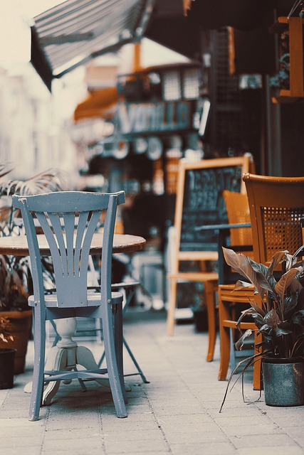
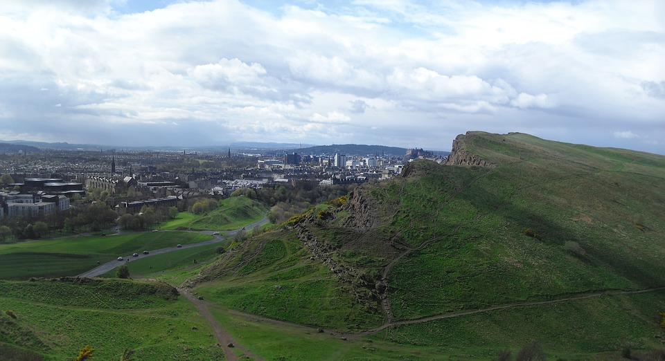
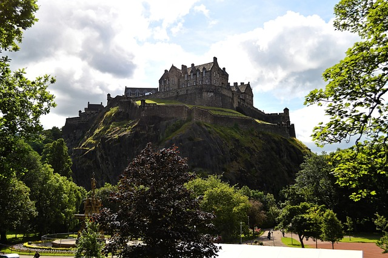

Nearby Areas
There are may be some places in your area close by that you could explore. (Hover over the images)

Park: you could go to a nearby park or forest, they are in most places and it could be a nice breath of fresh air.

Cafe: go check out that cafe you've wanted to try but never have, or if you do have a local cafe that you go to then pop in and say hi.

Hill: maybe you have a hill nearby, that could be a nice trip, and if its in a city then you'll see some nice views from there.

Unique: explore your area and see what it may hide. Look through maps or online, maybe there is a historic site nearby or some unique spot that could be interesting to see for yourself.
<- Back to Nice Day Ideas